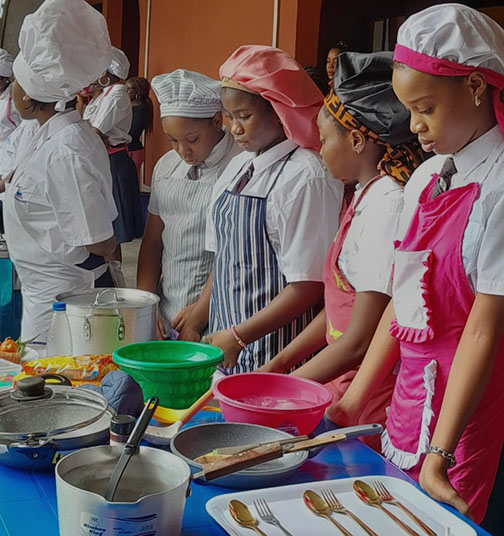

Thank you for visiting our page. We glad you are willing to know us more
Prince college is a Training college established on May 5, 2024 by Princess Adjornor to a world where anyone, anywhere has the power to transform ones lives through learning, Training in Enterpreneurship. The course offered in our scholl will help you meet the fastest growing world and gives you a brighter future.Our courses are thoughtfully crafted to cater not only to seasoned professionals aiming to advance their capabilities but also to beginners eager to build their skills from the ground up with confidence.
To organize apprenticeship, in-plant training and training programmes for industrial and clerical workers and train Instructors and Training Officers required for the purpose. To provide for vocational guidance and career development in industry.
To develop training standards, and evolve effective trade testing and certification policies and programmes. To initiate a continuing study of the country's manpower requirements at the skilled worker level.
To establish and maintain technical and cultural relations with international organizations and other foreign institutions engaged in activities connected with vocational training and, Subject to the provisions of this Act, to do all such things as are conducive to the attainment of the objectives of the Institute.

+233274877276
+233244845276
PrincessCollege122@gmail.com
Princessct@gmail.com
Dansoman-Snit Flat(Main Branch)
East-Legon behind airport view hotel
New-tarkoradi - Opposite A.A Mensah